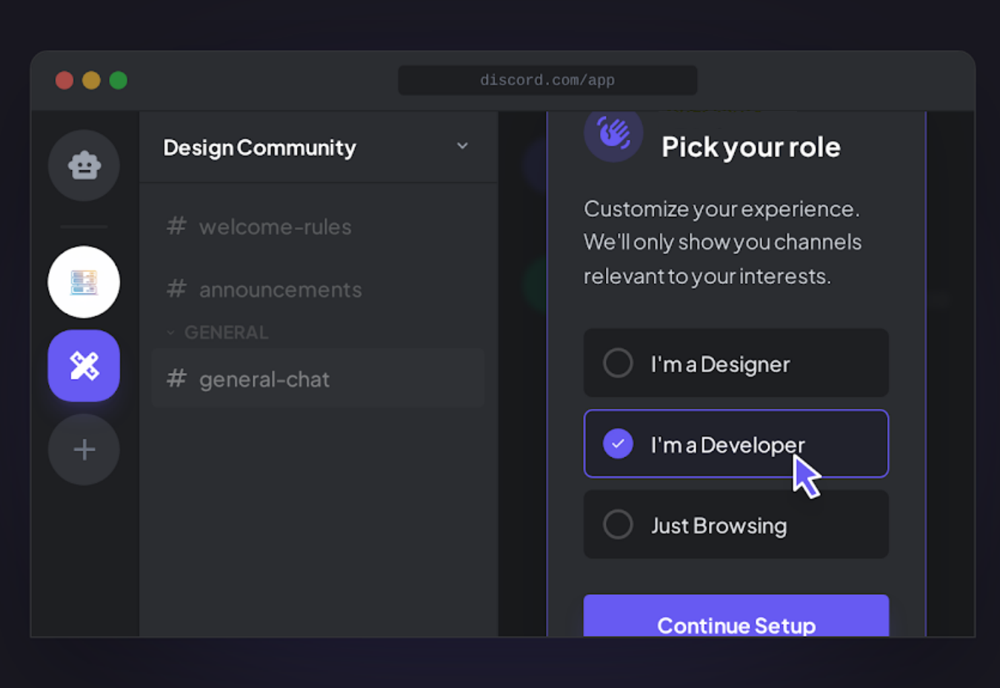
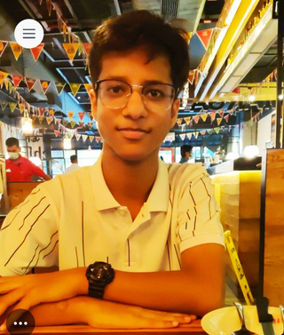
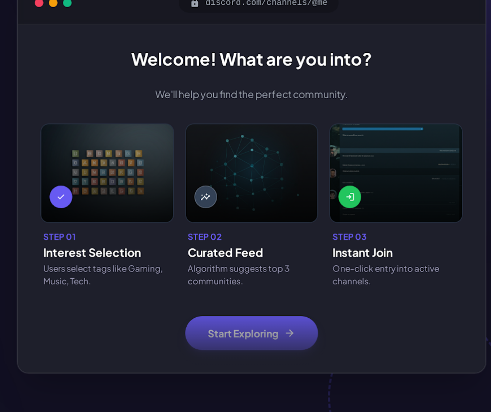

Improving Discord for new users
A deep dive into onboarding friction points, server discovery, and the first-time user experience design patterns.
Read case study →
Product overview
Discord is a VoIP and instant-messaging social platform. People talk through voice calls, video calls, text, media and files, in private chats or in communities called "servers". It sits across VoIP, social, streaming and gaming.
The ecosystem: value and utility
Discord earns revenue from optional enhancements while keeping a free, feature-rich core experience for communities. The model is freemium.
Business model
Discord Nitro $9.99 / month
The primary monetization engine. Users pay for self-expression perks, higher upload limits (500MB) and HD video streaming.
Server Boosting
Crowdfunded perks for better audio and vanity URLs.
Dev ecosystem
An app directory and server subscriptions.
Core features (free)
Voice & video
Low-latency, "drop-in" voice channels. Screen sharing up to 720p/30fps for free users.
Topic-based channels
Structured text chat organized by category, with markdown, threads and file sharing.
Roles & permissions
Granular access control so communities can self-moderate and create hierarchies.
User persona: the social explorer
Improving onboarding for novice users.

Harshit Aggarwal
"Everyone told me to get Discord for our group project, but I have no idea what a 'server' actually is. I just want to chat, not code."
Core goals
- Connect quickly with existing friends without setup hassle
- Find a specific community topic without getting overwhelmed
- Share screens easily during study sessions
Pain points
- "The interface feels like a cockpit": too many icons
- Overwhelmed by bot notifications and role permissions
- Fear of accidentally unmuting or joining the wrong voice channel
Key motivations
Problem: the new user experience
Retention drops sharply in the first seven days after an account is created. Day-1 drop-off is the biggest hit, at about 60%.
1. The empty hallway
Users join but don't know where to go. The server discovery list is overwhelming and finding relevant communities isn't intuitive.
2. Cognitive load
Too many channels, permissions and bots cause paralysis. The UI assumes gaming knowledge that many new users lack.
3. Generic welcome
Onboarding is one-size-fits-all and doesn't personalize the first landing to a user's intent.
The data suggests that 4 out of 5 new users leave a server within 10 minutes of joining without posting a single message. The main driver is choice paralysis from the unguided "empty hallway".
New user journey
Optimizing day-1 retention. Emotion starts high at discovery, dips at sign-up (the drop-off risk), recovers slowly after the first join, and reaches success once a user engages.
| Discovery | Sign up | First join | Engagement | |
|---|---|---|---|---|
| User goals | Find a specific community or topic quickly | Create a unique identity and verify the account | Understand the server context, rules and navigation | Send a first message, join voice, or react to content |
| Touchpoints | Web landingApp StoreInvite link | Reg formEmailCaptcha | Welcome screenRules modalOnboarding | Chat inputChannel listReaction menu |
| Emotion | High intent | Drop-off risk | Cautious | Success |
| Pain points | Confusion over servers vs groups vs DMs | Complex captcha; email verification delay over 2 minutes | Immediate notification overload; empty states in channels | Strict permissions block the first message; social anxiety and "lurker" mode |
| Opportunities | Quick win Interactive "What is a server?" tooltip tour | High impact Social login to bypass captcha | UX fix Smart mute defaults based on server size | Engagement Suggested "icebreaker" messages |
What should we build first?
I scored four ideas with RICE (Reach, Impact, Confidence, Effort) to find the highest-leverage opportunities for new-user activation.
| Solution idea | Reach | Impact | Confidence | Effort | RICE score | Status |
|---|---|---|---|---|---|---|
| Contextual tooltips Guide users through server setup | 5M | 2.0 | 90% | 1.0 | 900 | Winner |
| Interactive onboarding "Game-style" tutorial for newbies | 10M | 3.0 | 80% | 4.0 | 600 | Priority |
| Friend finder sync Improved contact syncing | 8M | 2.0 | 70% | 3.0 | 373 | Backlog |
| AI chat summary Summarize missed conversations | 2M | 5.0 | 50% | 5.0 | 100 | Backlog |
Contextual tooltips win with 900 points, 50% ahead of the next best idea, because they reach many people at very low effort.
Solution 1: interactive guided tours
Replace "empty state" confusion with a structured, role-based setup wizard.
New users face cognitive overload from endless channels and unread badges the moment they join.
An interactive overlay highlights key areas and suppresses notifications until the user completes setup.
New users don't need more options. They need a clear first step.
Solution 2: guided discovery, curating the chaos
Help users find their tribe in three clicks or fewer, reducing empty-state anxiety.
Reduce new-user churn by giving immediate value and connection points at sign-up.
"Empty state anxiety" and choice overload from thousands of unorganized servers.
A guided flow that curates server suggestions based on user interests.

Interest selection
Users select tags such as gaming, music and tech.
Curated feed
An algorithm suggests the top three communities.
Instant join
One-click entry into active channels.
Conclusion and impact
The friction points, the interventions, and the projected growth for Discord's new-user experience.
Key problems
- Analysis paralysis: new users abandon the app when faced with 50+ server categories right after sign-up
- Empty state confusion: landing in empty servers with no guidance feels like a dead end
Proposed solutions
- Gamified onboarding: an interactive tutorial that rewards users with badges for completing profile setup
- Starter servers: pre-populated, bot-guided servers that make the first "safe" interaction easy
Projected impact
If a new user's first ten minutes feel welcoming, they are far more likely to stay and join in.
Thank you!
For reading this product teardown on improving Discord for new users.